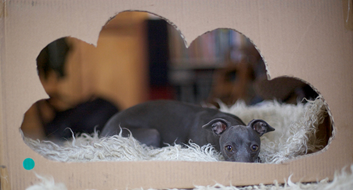
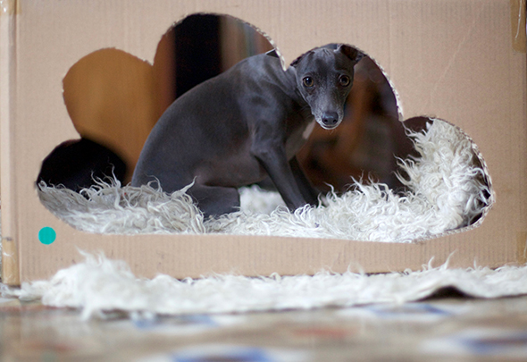

Lucrecia
With the leftovers of the calendar we made a footoshooting with Lu.
Lucretia
Con las sobras del calendario hemos hecho un fotoshooting con Lu.
Lucrecia
Mit den Überbleibseln des Adventskalenders haben wir ein Fotoshootings mit Lu gemacht.